Capturas reales en Chromium con personajes y perfiles de prueba aislados. No son partidas del jugador. La simulación y sus recompensas se conservan.
Abrir el juego · Galería de recursos
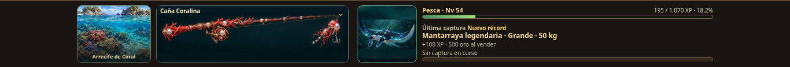
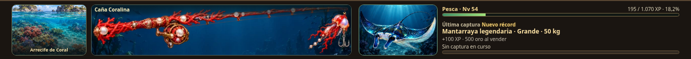
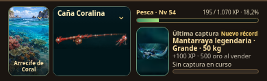
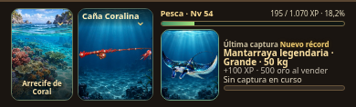
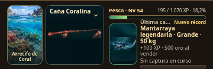
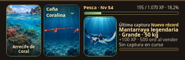
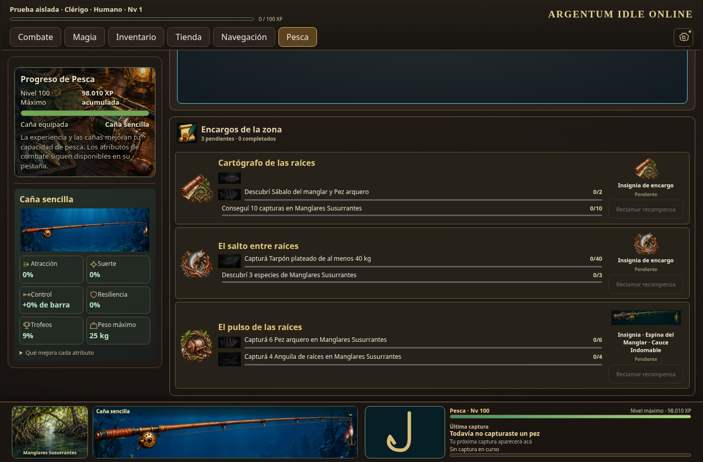
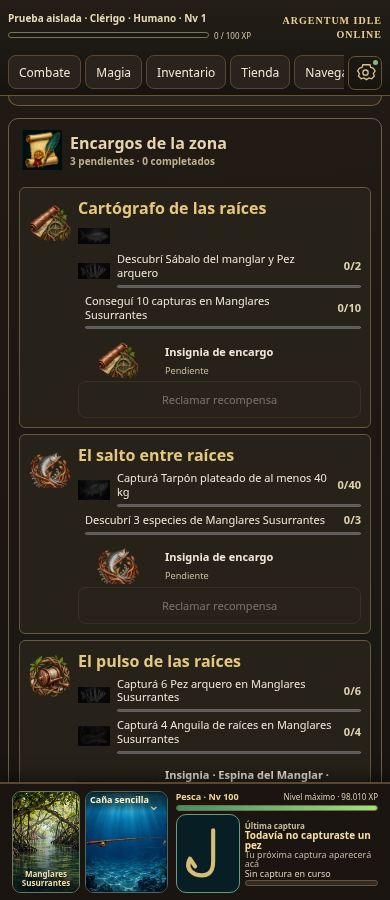
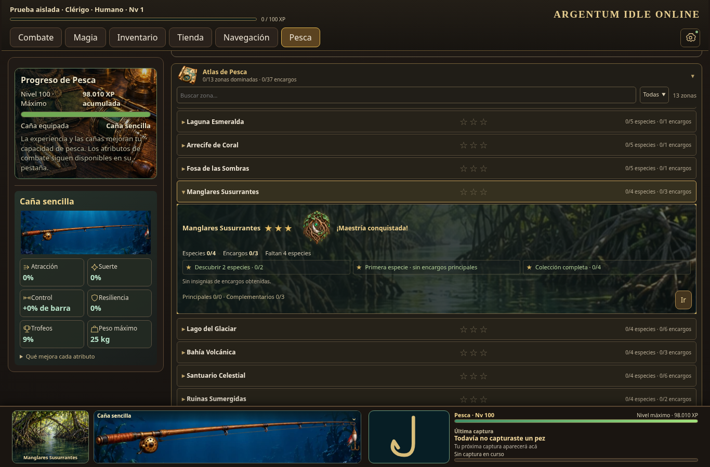
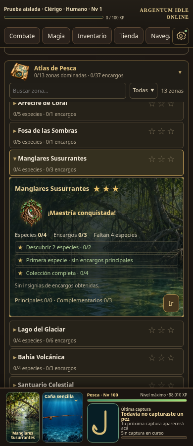
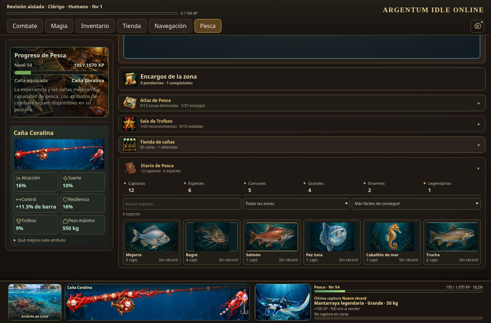
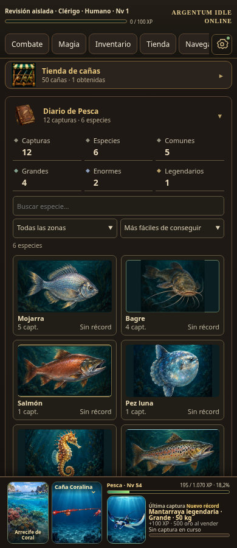
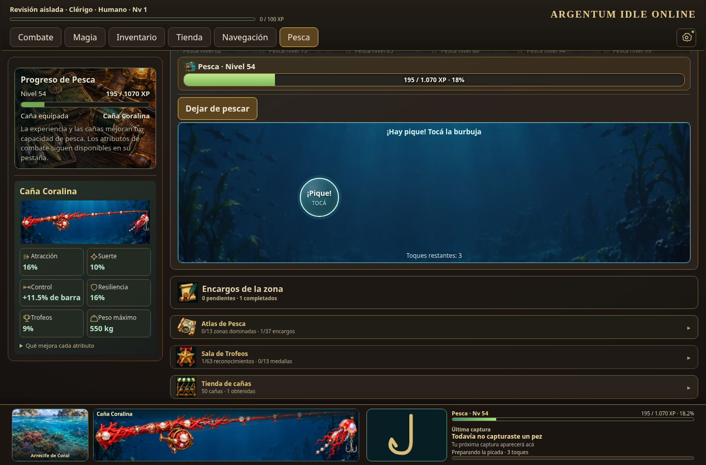
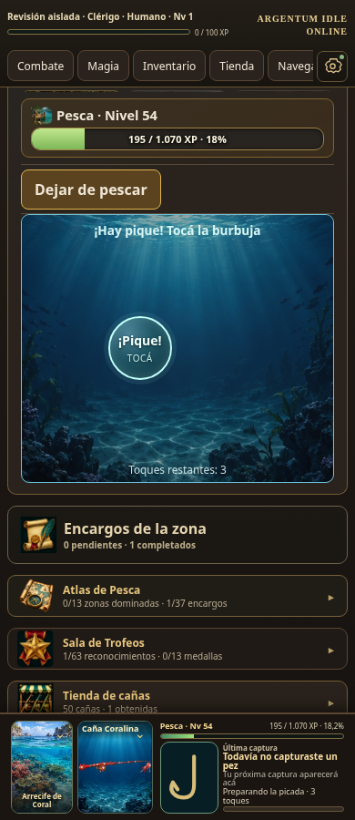
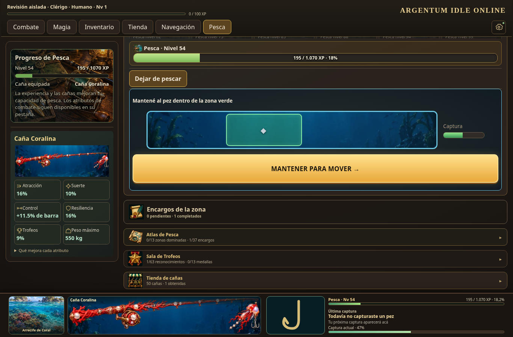
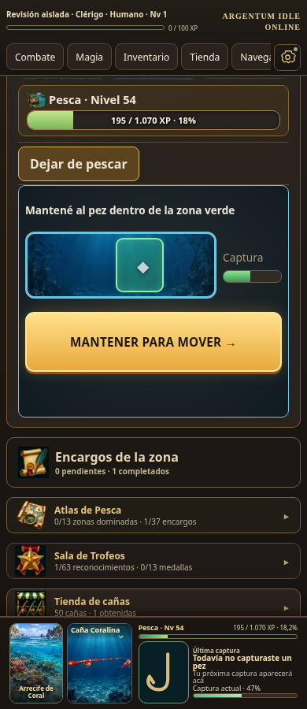
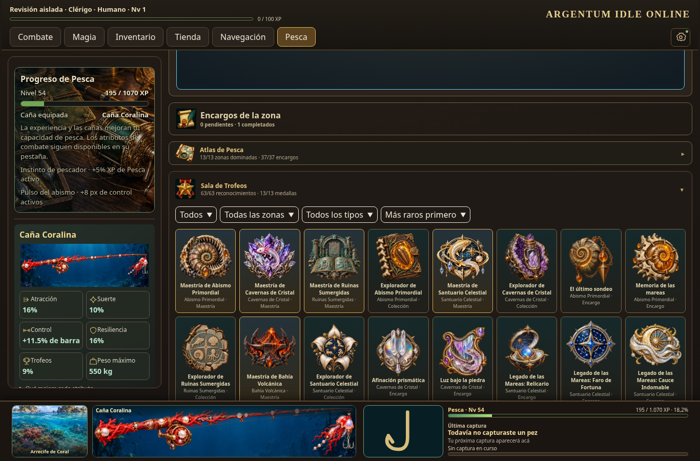
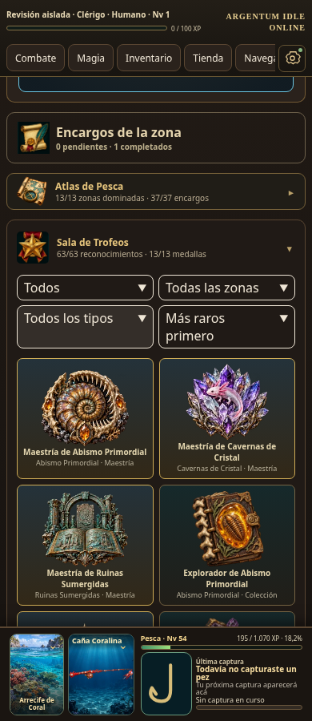
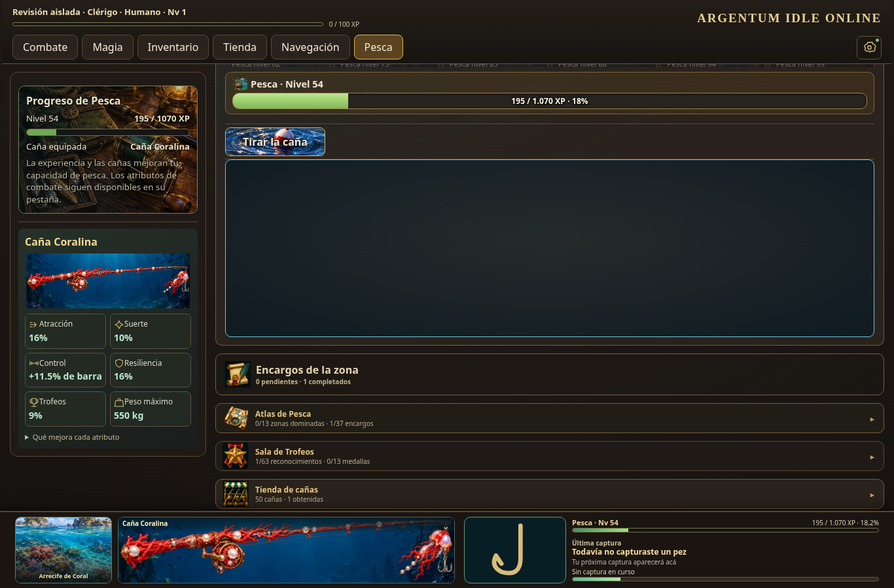
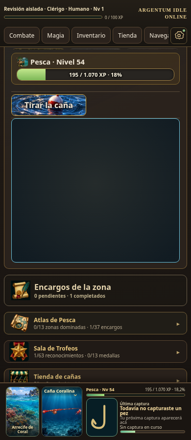